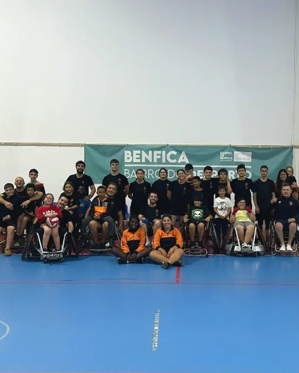
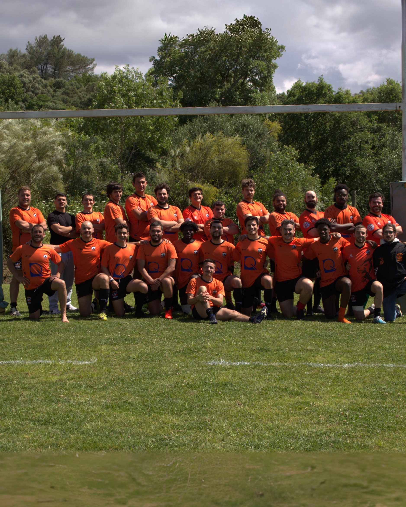

IV Feira das Instituições
05/07/2024 - 07/07/2024
A AUR esteve presente na IV Feira das Instituições, em Rio de Mouro. Com a nossa banca, vendemos merch e outros produtos, dando a conhecer mais o projeto.
A AUR esteve presente na IV Feira das Instituições, em Rio de Mouro. Com a nossa banca, vendemos merch e outros produtos, dando a conhecer mais o projeto.
Colónias de Férias da JFAMM
04/07/2024
A AUR esteve presente nas Colónias de Férias da JFAMM, onde foi feita uma atividade de inicição ao rugby para as crianças.
A AUR esteve presente nas Colónias de Férias da JFAMM, onde foi feita uma atividade de inicição ao rugby para as crianças.
Desporto na Praia
03/07/2024
A AUR iniciou uma atividade na Praia das Maçãs, onde foi feito um treino para as pessoas que estavam a frequentar a praia se poderem juntar.
A AUR iniciou uma atividade na Praia das Maçãs, onde foi feito um treino para as pessoas que estavam a frequentar a praia se poderem juntar.
Jantar Final de Época
28/06/2024
Assim chega mais um final de época, como todas, com vitórias, derrotas e muito progresso dentro e fora de campo! Como é costume, fizemos o jantar de final de época onde se realizou também a entrega de prémios.
Assim chega mais um final de época, como todas, com vitórias, derrotas e muito progresso dentro e fora de campo! Como é costume, fizemos o jantar de final de época onde se realizou também a entrega de prémios.
Manhãs Desportivas
22/06/2024
A AUR esteve presente nas Manhãs Desportivas, no Campo de Futebol da Tapada. Foi um bom dia para se experimentar coisas novas e manter o corpo ativo.
A AUR esteve presente nas Manhãs Desportivas, no Campo de Futebol da Tapada. Foi um bom dia para se experimentar coisas novas e manter o corpo ativo.
Treino de Rugby em Cadeira de Rodas

21/06/2024
A AUR participou num treino diferente. Vários atletas de todos escalões tiveram a oportunidade de aprender e experimentar o rugby adaptado a cadeira de rodas!
A AUR participou num treino diferente. Vários atletas de todos escalões tiveram a oportunidade de aprender e experimentar o rugby adaptado a cadeira de rodas!
Ericeira Beach Rugby
15/06/2024 - 16/06/2024
A AUR participou na 14° Edição do Ericeira Beach Rugby, representado pelos escalões Seniores Feminino e Masculino, Sub19, Sub16, Sub14, Sub12, Sub10 e Sub8.
A AUR participou na 14° Edição do Ericeira Beach Rugby, representado pelos escalões Seniores Feminino e Masculino, Sub19, Sub16, Sub14, Sub12, Sub10 e Sub8.
Algarve 7s
07/06/2024 - 10/06/2024
Foram dias de rugby incríveis, que deram aos atletas a oportunidade de jogar com equipas internacionais e evoluir de jogo para jogo. Os seniores masculinos com a sua primeira participação, retiraram imensas aprendizagens. A equipa sénior feminina conseguiu conquistar o 3º lugar da sua categoria.
Foram dias de rugby incríveis, que deram aos atletas a oportunidade de jogar com equipas internacionais e evoluir de jogo para jogo. Os seniores masculinos com a sua primeira participação, retiraram imensas aprendizagens. A equipa sénior feminina conseguiu conquistar o 3º lugar da sua categoria.
Dia da Criança
01/06/2024
A AUR celebrou o Dia da Criança com um convívio entre atletas. Estivémos presentes tanto no Parque Internacional Mem Martins, como no Complexo Desportivo Municipal de Fitares. Os sub8/10/12 tiveram o convívio do CDUL sponsors na Cidade Universitária.
A AUR celebrou o Dia da Criança com um convívio entre atletas. Estivémos presentes tanto no Parque Internacional Mem Martins, como no Complexo Desportivo Municipal de Fitares. Os sub8/10/12 tiveram o convívio do CDUL sponsors na Cidade Universitária.
Curso de Arbitragem Grau I
25/05/2024
Tivemos 7 pessoas da AUR, entre atletas e treinadores, presentes no Curso de Arbitragem Grau I, certificado pela federação portuguesa de rugby.
Tivemos 7 pessoas da AUR, entre atletas e treinadores, presentes no Curso de Arbitragem Grau I, certificado pela federação portuguesa de rugby.
Feira da Doçaria
17/05/2024 - 19/05/2024
A AUR esteve presente na Feira da Doçaria, no Parque Urbano da Cavaleira. Com a nossa banca, vendemos merch e outros produtos, dando a conhecer mais o projeto. Além disso, incentivámos à prática de rugby com atividades, onde até o Sr. Presidente da JFAMM, Valter Januário, participou.
A AUR esteve presente na Feira da Doçaria, no Parque Urbano da Cavaleira. Com a nossa banca, vendemos merch e outros produtos, dando a conhecer mais o projeto. Além disso, incentivámos à prática de rugby com atividades, onde até o Sr. Presidente da JFAMM, Valter Januário, participou.
3° Etapa do Campeonato Nacional F 7's
11/05/2024
As nossas séniores femininas marcaram presença na 3° etapa do Campeonato Nacional de Sevens Feminino, que decorreu no campo da Agrária, em Coimbra.
As nossas séniores femininas marcaram presença na 3° etapa do Campeonato Nacional de Sevens Feminino, que decorreu no campo da Agrária, em Coimbra.
Ajuda no Crossrun em Rio de Mouro
11/05/2024
A AUR esteve presente no Crossrun em Rio de Mouro, onde ajudou na organização e na montagem do evento.
A AUR esteve presente no Crossrun em Rio de Mouro, onde ajudou na organização e na montagem do evento.
2° Etapa do Campeonato Nacional F 7's
04/05/2024
As nossas séniores femininas marcaram presença na 2° etapa do Campeonato Nacional de Sevens Feminino, que decorreu no campo do São Miguel, onde contaram com o apoio dos séniores masculinos.
As nossas séniores femininas marcaram presença na 2° etapa do Campeonato Nacional de Sevens Feminino, que decorreu no campo do São Miguel, onde contaram com o apoio dos séniores masculinos.
Convívio Carlos Nobre Sub-8/10/12
01/05/2024
Os nossos escalões de formação sub-8/10/12 participaram no convívio Carlos Nobre.
Os nossos escalões de formação sub-8/10/12 participaram no convívio Carlos Nobre.
1° Etapa do Campeonato Nacional F 7's
26/04/2024
As nossas séniores femininas marcaram presença na 1° etapa do Campeonato Nacional de Sevens Feminino, que decorreu no Estádio Universitário de Lisboa.
As nossas séniores femininas marcaram presença na 1° etapa do Campeonato Nacional de Sevens Feminino, que decorreu no Estádio Universitário de Lisboa.
Jogo Séniores M vs. Galiza

26/04/2024
Os nossos séniores masculinos jogaram juntamente com os Dark Horses Rugby contra a Galiza. O jogo decorreu no campo da Agronomia.
Os nossos séniores masculinos jogaram juntamente com os Dark Horses Rugby contra a Galiza. O jogo decorreu no campo da Agronomia.
Fim de semana de campeões
21/04/2024
Duas atletas seniores femininas da AUR, Ana Costa e Yara Fonseca, foram campeãs nacionais pelo Sporting da Taça de Portugal Feminina! Os nossos sub-14 participaram num torneio com o Benfica nas Caldas da Rainha, onde integraram 2 equipas e uma delas ficou em 1º lugar.
Duas atletas seniores femininas da AUR, Ana Costa e Yara Fonseca, foram campeãs nacionais pelo Sporting da Taça de Portugal Feminina! Os nossos sub-14 participaram num torneio com o Benfica nas Caldas da Rainha, onde integraram 2 equipas e uma delas ficou em 1º lugar.
11º Aniversário AUR
14/04/2024
A AUR celebrou o seu 11º aniversário com um convívio entre atletas, familiares e amigos. Houve jogos de rugby, um almoço partilhado e um bolo de aniversário.
A AUR celebrou o seu 11º aniversário com um convívio entre atletas, familiares e amigos. Houve jogos de rugby, um almoço partilhado e um bolo de aniversário.
Rugby Youth Festival 2024

07/04/2024
A AUR marcou presença no Portugal Rugby Youth Festival 2024 com 4 atletas a fazer parte da organização e com escalões sub-13/15/19 a competir contra equipas nacionais e internacionais. Tivémos 5 atletas femininas a jogar em representação da Seleção Regional Sul sub-15.
A AUR marcou presença no Portugal Rugby Youth Festival 2024 com 4 atletas a fazer parte da organização e com escalões sub-13/15/19 a competir contra equipas nacionais e internacionais. Tivémos 5 atletas femininas a jogar em representação da Seleção Regional Sul sub-15.
Ubuntu Fest 2024
05/04/2024
A AUR foi convidada a colaborar e participar no Ubuntu Fest, um convívio entre várias escolas a nível nacional da academia de Líderes Ubuntu, na Quinta da Ribafria.
A AUR foi convidada a colaborar e participar no Ubuntu Fest, um convívio entre várias escolas a nível nacional da academia de Líderes Ubuntu, na Quinta da Ribafria.
Jogo Séniores M vs. GDA
24/03/2024
Naquele que foi o último jogo desta época em parceria com os Dark Horses Rugby, os nossos séniores masculinos jogaram contra o GDA Rugby.
Naquele que foi o último jogo desta época em parceria com os Dark Horses Rugby, os nossos séniores masculinos jogaram contra o GDA Rugby.
Estágio Regional Sul Feminino U15

24/03/2024
Em modo de preparação para o Portugal Rugby Youth Festival 2024, as nossas atletas sub-15 marcaram presença no estágio regional sul.
Em modo de preparação para o Portugal Rugby Youth Festival 2024, as nossas atletas sub-15 marcaram presença no estágio regional sul.
Caça aos Ovos

24/03/2024
A AUR organizou uma caça aos ovos para os atletas e familiares como atividade de Páscoa no Parque Urbano da Cavaleira.
A AUR organizou uma caça aos ovos para os atletas e familiares como atividade de Páscoa no Parque Urbano da Cavaleira.
Convívio Direito Sub-6/8/10/12

23/03/2024
Os nossos escalões de formação marcaram presença no 7° Torneio Internacional do Direito.
Os nossos escalões de formação marcaram presença no 7° Torneio Internacional do Direito.
Jogo Séniores M vs. Dark Horses

18/03/2024
Os nossos séniores masculinos honraram a camisola do Ubuntu Rugby num jogo amigável contra os Dark Horses Rugby.
Os nossos séniores masculinos honraram a camisola do Ubuntu Rugby num jogo amigável contra os Dark Horses Rugby.
Convívio de Apoio à Seleção Masculina


03/03/2024
Os nossos atletas marcaram presença no apoio às meias finais do Campeonato Europeu Masculino Portugal vs. Espanha. Os escalões sub8/10/12 participaram num torneio na Tapada da Ajuda.
Os nossos atletas marcaram presença no apoio às meias finais do Campeonato Europeu Masculino Portugal vs. Espanha. Os escalões sub8/10/12 participaram num torneio na Tapada da Ajuda.
Jogo Séniores M vs. Belas
02/03/2024
Os nossos séniores masculinos jogaram juntamente com os Dark Horses Rugby contra o Belas Rugby naquele que foi o último jogo do campeonato CN2.
Os nossos séniores masculinos jogaram juntamente com os Dark Horses Rugby contra o Belas Rugby naquele que foi o último jogo do campeonato CN2.
Centro Social Paroquial do Algueirão

01/03/2024
A AUR esteve presente no Centro Social Paroquial do Algueirão a ajudar na contagem de produtos alimentares.
A AUR esteve presente no Centro Social Paroquial do Algueirão a ajudar na contagem de produtos alimentares.
Convívio de Apoio à Seleção Feminina


24/02/2024
Os escalões sub8/10/12 participaram num convívio de apoio à Seleção Feminina e a equipa feminina da AUR participou numa jornada de Emergentes. Fez-se um piquenique com todos os presentes.
Os escalões sub8/10/12 participaram num convívio de apoio à Seleção Feminina e a equipa feminina da AUR participou numa jornada de Emergentes. Fez-se um piquenique com todos os presentes.
Jogo Séniores M vs. São Miguel
17/02/2024
Os nossos séniores masculinos jogaram juntamente com os Dark Horses Rugby contra o São Miguel Rugby.
Os nossos séniores masculinos jogaram juntamente com os Dark Horses Rugby contra o São Miguel Rugby.
Torneio 7's Emergentes Feminino
17/02/2024
As nossas séniores femininas participaram no torneio de sevens emergentes, que decorreu no Campo de Rugby do Direito.
As nossas séniores femininas participaram no torneio de sevens emergentes, que decorreu no Campo de Rugby do Direito.
Estágio da Seleção sub14
17/02/2024
Os nossos atletas, Rodrigo Branco e Luanna Monteiro, marcaram presença no estágio da seleção sub14.
Os nossos atletas, Rodrigo Branco e Luanna Monteiro, marcaram presença no estágio da seleção sub14.
Jogo Séniores F vs. Agrária
04/02/2024
As nossas séniores femininas estiveram em campo juntamente com o Sporting Rugby a disputar os quartos de final da Taça de Portugal.
As nossas séniores femininas estiveram em campo juntamente com o Sporting Rugby a disputar os quartos de final da Taça de Portugal.
Torneio Sub-14 na Bairrada
04/02/2024
Os nossos escalões de formação marcaram presença juntamente com o Benfica Rugby no torneio na Bairrada.
Os nossos escalões de formação marcaram presença juntamente com o Benfica Rugby no torneio na Bairrada.
Jogo Séniores M vs. Oeiras
03/02/2024
Os nossos séniores masculinos jogaram juntamente com os Dark Horses Rugby contra o Oeiras Rugby.
Os nossos séniores masculinos jogaram juntamente com os Dark Horses Rugby contra o Oeiras Rugby.
Semana de aulas - Escola Piloto
29/01/2024 - 02/02/2024
A Academia Ubuntu Rugby esteve a dar aulas de introdução ao Rugby na Escola Básica Piloto, em Mem-Martins, nos horários de Educação Física.
A Academia Ubuntu Rugby esteve a dar aulas de introdução ao Rugby na Escola Básica Piloto, em Mem-Martins, nos horários de Educação Física.
Final do Campeonato Feminino Nacional


28/01/2024
As nossas seniores femininas estiveram em campo juntamente com o Sporting Rugby a disputar a final do Campeonato Nacional de XV.
As nossas seniores femininas estiveram em campo juntamente com o Sporting Rugby a disputar a final do Campeonato Nacional de XV.
Jogo Séniores M vs. Sporting

28/01/2024
Os nossos seniores jogaram juntamente com os Dark Horses Rugby contra o Sporting Rugby.
Os nossos seniores jogaram juntamente com os Dark Horses Rugby contra o Sporting Rugby.
Convívio Rugby Belenenses Sub-8/10/12


27/01/2024
Os nossos escalões de formação marcaram presença juntamente com o Benfica Rugby no convívio organizado pelo Belenenses Rugby.
Os nossos escalões de formação marcaram presença juntamente com o Benfica Rugby no convívio organizado pelo Belenenses Rugby.